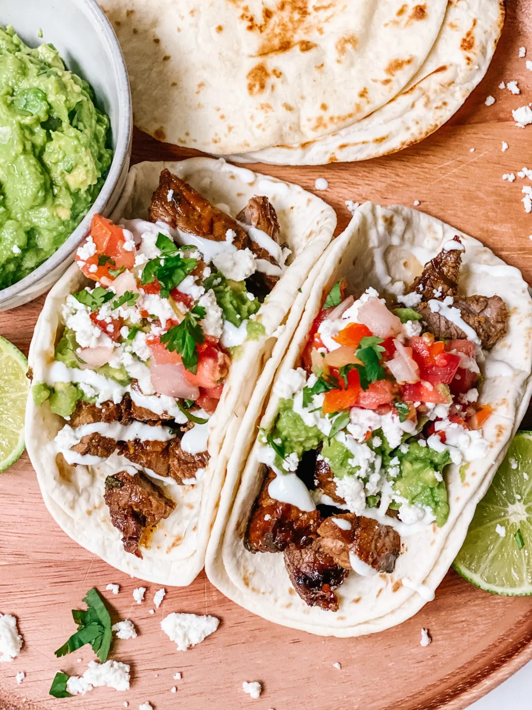
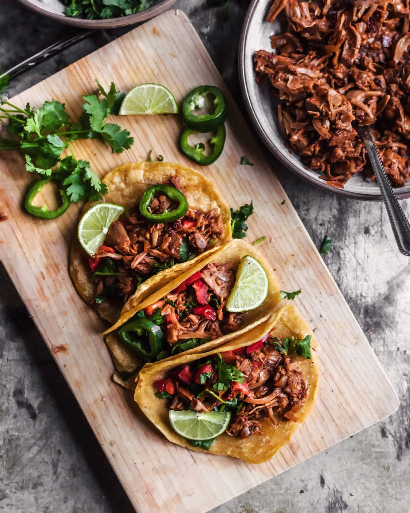

Ingredients for Fish Burrito
Avacodo Cilantro Sauce
Grilled Chicken Tacos WIth A Spicy Garlic Sauce

Grilled Chicken Tacos
Spicy Garlic Sauce
Beef Tacos with Chipotle Lime Crema

1 lb ground beef
1 tablespoon olive oil
1/2 onion, diced
2 cloves garlic, minced
1 tablespoon chili powder
1 teaspoon cumin
1/2 teaspoon smoked paprika
1/4 teaspoon black pepper
8 small corn tortillas
Toppings: diced tomatoes, chopped cilantro, shredded cheese
1/2 cup sour cream
1 tablespoon adobo sauce (from a can of chipotles in adobo)
1 tablespoon lime juice
Salt to taste
Beef Tacos
Chipotle Lime Crema
Jackfruit Tacos with a Spcicy Chili Oyster Sauce

2 cans young jackfruit in brine, drained and rinsed
1 tablespoon olive oil
1/2 onion, diced
2 cloves garlic, minced
1 tablespoon chili powder
1 teaspoon cumin
1/2 teaspoon smoked paprika
1/4 teaspoon black pepper
8 small corn tortillas
Toppings: diced tomato, chopped cilantro, sliced jalapeño
2 tablespoons vegetable oil
2 cloves garlic, minced
2 tablespoons chili paste (such as sambal oelek)
1 tablespoon oyster sauce
1 tablespoon soy sauce
1 tablespoon rice vinegar
1 tablespoon honey
1/2 teaspoon sesame oil
1/4 teaspoon black pepper
1/4 cup water
Jackfruit tacos with a creamy avocado lime sauce
Spicy Chili Oyster Sauce